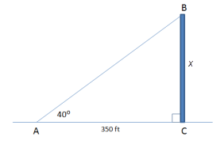

Right Triangle Toolbox

Think of trigonometry as a toolbox. It has a number of useful tools such as the sin function and its inverse the arcsin function. Your task is to look at the problem and see which tools can be used to get to the answer.
This site uses a 5 step process to solve trigonomtery problems:

The first step is to draw a diagram. Make it roughly to scale. Use a protractor if you can to set known angles.Insert in the diagram all the things you are given. Here, the angle at A is 40°, and the distance to the tower along the ground (AC) is 350ft.
It is helpful to label the key points. The observer is at point A, and the tower is BC. Label the thing you are asked to find as x.
Trigonometry gives us tools that deal with right triangles - where one interior angle is 90°. ( Only two trig tools deal with non-right triangles - the Law of Sines and the Law of Cosines.)
The first thing to do is determine if there are any right triangles. Many times you have to assume the right angles. For example in the tower above, you can assume the tower is vertical and makes a right angle with the ground at the bottom. Draw this right angle into the diagram.
In the diagram, we see we have a right triangle ABC - and so we can use the trigonometry tools.
Looking at the diagram, we see that we know one angle (40°), and its adjacent side (350ft), and we are asked to find the opposite side (BC). So looking in our toolbox, we need a function that contain the angle, its adjacent side (A), and opposite side (O).
We see that the tan function uses all three, so that will be our choice here. So we start with the definition of the function:
Once we have picked our tool (here the tan function), insert the known values, and the unknown x: We want to isolate x on one side so we multiply both sides by 350: Using a calculator*, you will see that tan40° is 0.8391 so: which comes out to 293.69: Which is the height of our tower in feet.
* The angle is given in degrees, so be sure to set the calculator to work in degrees, not radians
Once we have calculated the result, check back with the diagram and see if the answer looks reasonable. In the diagram, we tried to draw it roughly to scale, so the tower should be a little less tall than the distance to it, so this looks about right. If this is not the case, the most common error is not setting the calculator to work in degrees or radians as needed.